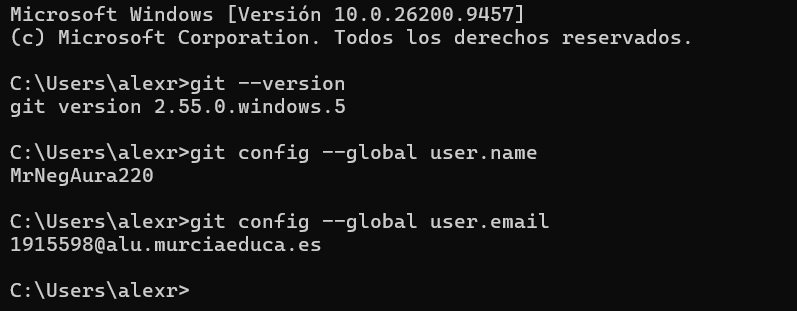
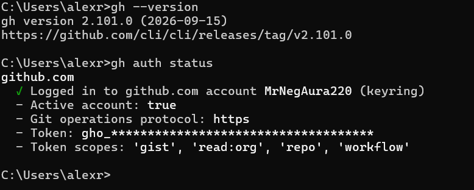
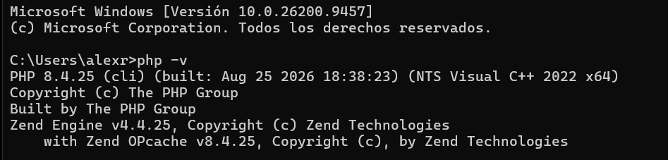
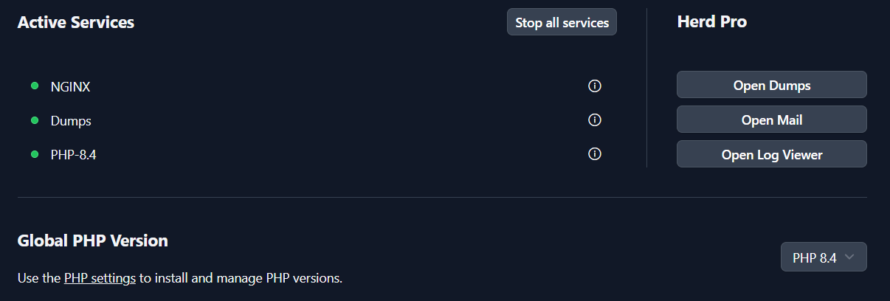
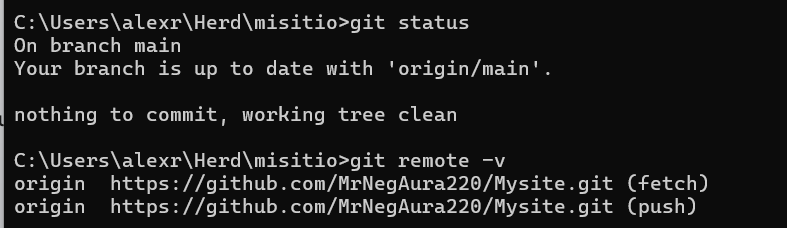
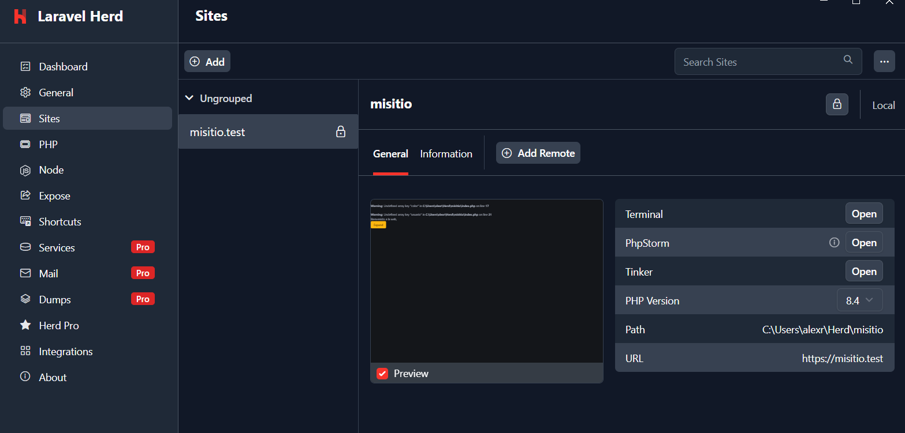

Practica01: instalación y configuración del sitio web en local¶
Autor: MrNegAura · 2º DAW · Diseño de Interfaces Web
Introducción¶
En este proyecto he montado en mi ordenador el entorno para trabajar con mi sitio web misitio en local y he documentado todo el proceso con ProperDocs. He usado Git y GitHub CLI para el control de versiones, y Laravel Herd para servir la web con PHP 8.4 y HTTPS.
1. Git instalado y configurado¶
Lo primero fue instalar Git en Windows. Para comprobar que estaba bien instalado usé git --version, y luego configuré mi usuario y mi correo del instituto para que los commits salgan a mi nombre:
git --version
git config --global user.name "MrNegAura220"
git config --global user.email "*******@alu.murciaeduca.es"
Con git config --global user.name y git config --global user.email comprobé que se habían guardado.

2. GitHub CLI instalado y configurado¶
Después instalé GitHub CLI (gh) para poder trabajar con GitHub desde la terminal. Inicié sesión con gh auth login y verifiqué que todo iba bien con gh auth status: aparece mi cuenta conectada, el protocolo https y los permisos del token (gist, read:org, repo y workflow).
gh --version
gh auth login
gh auth status

3. Herd instalado con PHP 8.4¶
Instalé Laravel Herd, que ya trae NGINX y PHP para desarrollar en local sin configurar nada a mano. En la instalación dejé PHP 8.4 como versión global. Lo comprobé desde la terminal con php -v (me sale la 8.4.25) y en el panel de Herd, donde los servicios NGINX, Dumps y PHP-8.4 aparecen activos.
php -v


4. Repositorio "misitio" clonado en local¶
Cloné el repositorio de GitHub dentro de la carpeta de Herd (C:\Users\alexr\Herd) con el nombre misitio, para que Herd lo detecte automáticamente:
cd C:\Users\alexr\Herd
git clone https://github.com/MrNegAura220/Mysite.git misitio
Con git status veo que estoy en la rama main, actualizada con origin/main y sin cambios pendientes. Con git remote -v compruebo que el remoto origin apunta a mi repositorio de GitHub.
git status
git remote -v

5. Herd enlazado a "misitio" y sirviéndolo en HTTPS¶
En la pestaña Sites de Herd aparece misitio.test, que apunta a la carpeta C:\Users\alexr\Herd\misitio y usa PHP 8.4. Activé el candado (Secure) para que el sitio funcione con certificado y se abra por HTTPS en https://misitio.test.

Resumen de elementos y plugins de ReadTheDocs usados¶
Para esta documentación he usado el tema readthedocs que viene incluido en ProperDocs. Estos son los elementos que he configurado en properdocs.yml:
| Elemento | Para qué lo uso |
|---|---|
Tema readthedocs |
Da el aspecto de la web: menú lateral con las secciones y diseño limpio para documentación. |
nav |
Define el menú lateral y el orden de las páginas (Inicio, Proyectos, Archivos explicativos, Guía de uso). |
Plugin search |
Añade el buscador de la web para encontrar contenido rápido. |
Extensión admonition |
Permite crear recuadros de aviso o nota (!!! info, !!! note). |
Extensión tables |
Permite hacer tablas en Markdown, como esta. |
Extensión toc |
Genera el índice de cada página y los enlaces en los títulos (permalink). |
Extensión fenced_code |
Permite poner bloques de código con tres comillas invertidas. |